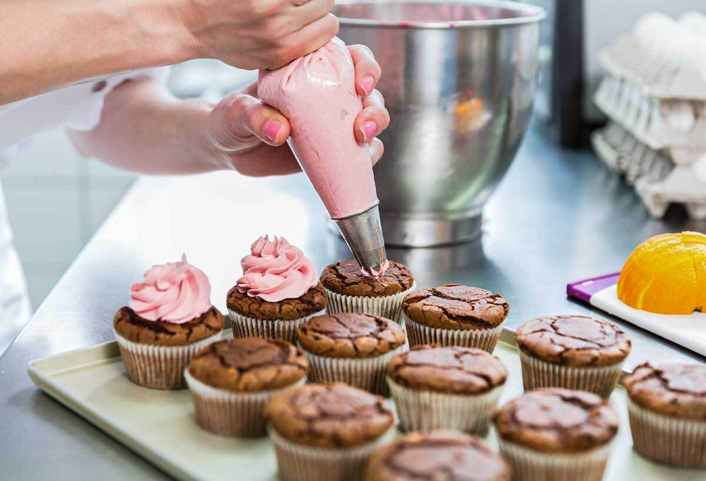

The Bakery Shop
Nuestra historia
Lo que hoy es una pastelería reconocida por su excelencia y creatividad, comenzó con un sueño simple: transformar los sabores en emociones. Desde nuestros inicios, la pasión por la pastelería nos llevó a buscar siempre algo más allá del azúcar y la harina: queríamos dominar el arte.
ese espíritu inquieto y perfeccionista, iniciamos un camino de formación constante que cruzó fronteras. Viajamos a Francia, cuna de la repostería clásica, para aprender de los maestros del hojaldre perfecto y la pâtisserie de vitrina. Exploramos los sabores intensos y técnicas delicadas de Italia, sumergiéndonos en la tradición del tiramisú auténtico, la pastafrola y los secretos del gelato artesanal. En Japón, descubrimos la precisión milimétrica del wagashi y la sutileza estética de la repostería oriental. Y en España, nos empapamos de innovación, creatividad y técnicas modernas aplicadas a la alta pastelería. Cada viaje fue una inversión en conocimiento, y cada capacitación, un paso hacia la excelencia. Nos formamos con chefs reconocidos internacionalmente, participamos en talleres especializados y competencias gastronómicas, siempre con la mirada puesta en la evolución constante.
Hoy, esa experiencia se transforma en productos únicos: desde tortas de diseño y petit gateaux de autor, hasta mesas dulces completamente personalizadas para eventos inolvidables. Nuestra propuesta no es solo visualmente atractiva, sino profundamente sabrosa y técnica. Creemos en la pastelería como arte, ciencia y pasión, y en compartir lo mejor del mundo con cada creación. Por eso, cada pieza que sale de nuestro obrador tiene una historia, una técnica y una inspiración detrás. Bienvenidos a nuestro mundo. Bienvenidos a una pastelería hecha con alma, sabor y perfección.
Productos mas elegidos
Torta Matilda
Cookies con toppings
Brownies surtidos